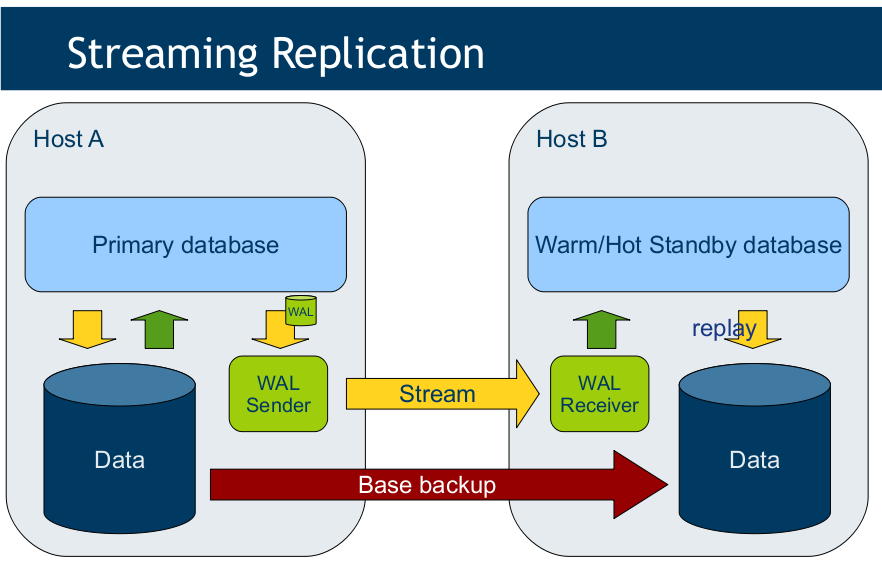
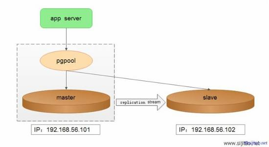
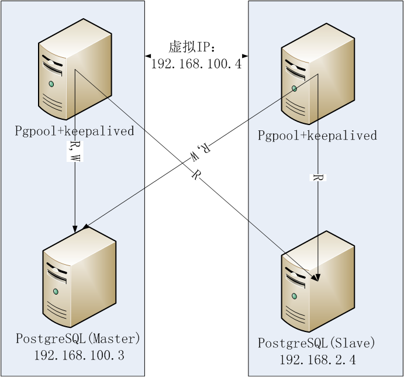
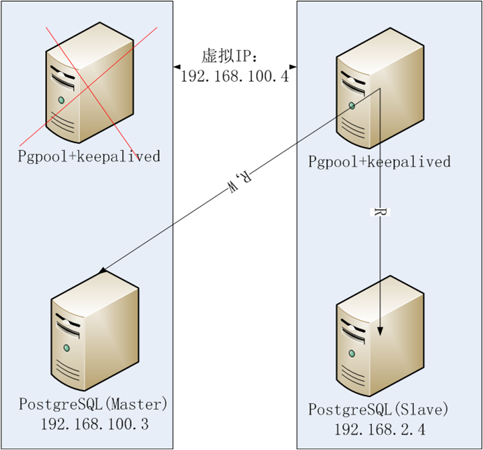
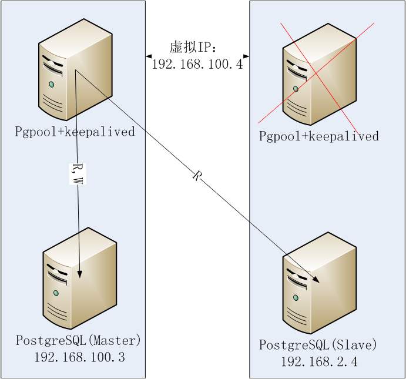
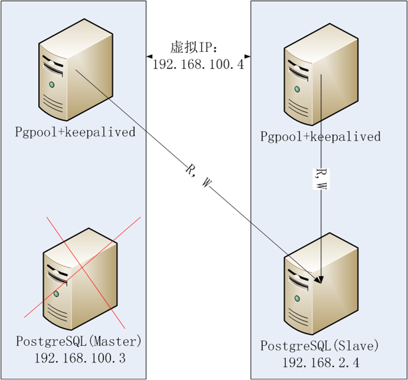
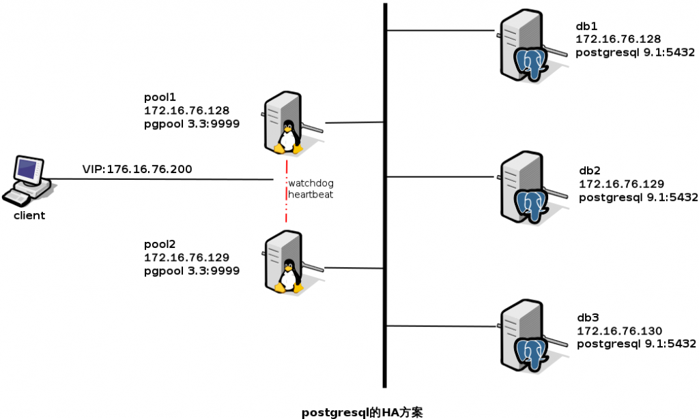

POSTGRESQL入门
Table of Contents
1 postgresql安装
- 网络方式安装
> sudo apt-get install postgresql 此过程，Linux系统中自动创建了一个postgres系统用户 postgresql数据库中自动创建了一个最高权限的postgres数据库用户
- 修改系统用户postgres和数据库用户postgres的密码
修改下postgres用户密码 > sudo -i # passwd postgres > sudo -i # su - postgres > psql > ALTER USER postgres with PASSWORD '123456'; > \q //退出psql客户端
2 初始化设置
- 创建数据库访问用户和数据库
> su - postgres > psql > CREATE USER hengjun WITH SUPERUSER PASSWORD '123456'; //SUPERUSER：超级用户的意思，权限较高 > CREATE DATABASE iotadream; > \q //退出psql客户端
- 开启数据库远程访问
编辑/etc/postgresql/9.5/main/postgresql.conf，允许数据库服务器监听来自任何主机的连接请求 vim /etc/postgresql/9.5/main/postgresql.conf listen_addresses = '*'
编辑/etc/postgresql/9.5/main/pg _hba.conf，控制远程连接的客户端用户和数据库权限 host all all 0.0.0.0/0 md5 host replication all 0.0.0.0/0 md5 注意：replication不包含在all当中，单独拿出来配置
3 常用数据库操作
- 连接命令
psql -U hengjun -h 192.168.161.128 iotadream -p 5432 // 必须指定数据库，而非use db;
- 退出
\q
- 查看数据库
\l
- 查看数据库的表
\dt
- 查看某张表的结构
\d tablename;
- 创建数据库的表
CREATE TABLE json_stdent(student json);
INSERT INTO json_stdent(student) VALUES ('{ "id": 10001}');
- 删除数据库的表
drop table tablename;
- 表中插入数据
INSERT INTO table_name (列1, 列2,...) VALUES (值1, 值2,....) INSERT INTO company (id, name, age) VALUES (9, 'abb9', 9)
- 删除表记录
DELETE FROM tablename; // 删除整张表的记录 DELETE FROM company WHERE id=1; // 删除一条记录
- 修改表中数据
UPDATE tablename SET name='abb1' WHERE id=1;
- 查询表中数据
SELECT * FROM tablename;
4 Postgresql特性
4.1 数据库认证模式
# METHOD can be "trust", "reject", "md5", "password", "gss", "sspi", # "ident", "peer", "pam", "ldap", "radius" or "cert". Note that # "password" sends passwords in clear text; "md5" is preferred since # it sends encrypted passwords. user -> pg1 user -> pg2 user -> linux1 user -> unix1 方便账号集中认证，管理
4.2 uuid
uuid是唯一，做主键是否优于自增的id呢？ 可以数据的保证独立性，不仅表独立，库中也是独立
4.3 json/jsonb
json插入的速度快，jsonb需要转换 实现了类似Mongodb文档型数据库的功能，速度测评比Mongodb还快4倍+
4.4 数组
create table arry_table(id serial primary key, teacher varchar[]);
insert into arry_table(teacher) values ('{"Mr Wang","Mrs Li"}');
4.5 几何类型
地图坐标相关
4.6 fdw
foreign data wrapper 可以操作外部数据 oracle_fdw mysql_fdw file_fdw(csv,txt文件)，做日志分析，统计，有点像spark的sql 100, John Smith, Austin, TX, 78727 200, Joe Johnson, Dallas, TX, 75201 300, Bob Jones, Houston, TX, 77028 400, Andy Davis, San Antonio, TX, 78227 500, James Williams, Austin, TX, 78727
5 postgresql高可用性HA(High Available)
5.1 HA相关名词解释
- HA
HA: High Available，高可用性，提供不间断服务
- Hot Standby
Hot Standby：双机热备。master挂了，slave顶上 只有一台机器再工作
- Cluster
Cluster: 集群。集群中1台机器挂了，n-1台仍然可以工作 每台机器都工作，像nginx一样
- LB
LB：Load Balance, 负载均衡
- VIP / Float IP
VIP(Float IP)：Virtual IP Addres，虚拟ip，通常也俗称浮动IP
5.2 HA相关软件
- Heartbeat/KeepAlived
管理vip/float_ip，监控服务的
- pg-pool II
pg-pool一种中间件，对pg数据库服务器来，它相当于客户端，对于app来说它又相当于数据库服务器 pg连接池管理 流复制 （多台pg机器之间的数据同步一致功能） 双机热备/集群负载均衡 内置看门狗(watchdog), 已经实现了类似 Heartbeat/KeepAlived的功能
5.3 双机
- pg原生流复制

master: 192.168.161.128 Read & Write slave: 192.168.161.129 Read Only master:坏了呢？
- 双机一

pg_pool连接接口,管理主从的切换
master: 192.168.1.128 Read & Write
slave: 192.168.1.129 Read Only
----->192.168.1.128:5432 (master)
pg_pool 192.168.1.138:9999 ---|
----->192.168.1.129:5432 (slave)
master坏了了，pg_pool让slave升级成master(Read & Write)
这种做法有没有问题？
- 双机二
master: 192.168.1.128 Read & Write
slave: 192.168.1.129 Read Only
----->192.168.1.128:5432
pg_pool master 192.168.1.136:9999 ---|
----->192.168.1.129:5432
----->192.168.1.128:5432
pg_pool slave 192.168.1.137:9999 ---|
----->192.168.1.129:5432
----->192.168.1.136:9999
vip(float_ip) 192.168.1.138:9999 ---|
----->192.168.1.137:9999




看下watchdog的效果 pg-pool master 启动pg-pool pg-pool slave 启动pg-pool
两台机器不够怎么办？+++++++++，并想让每台机器都可以读写呢？ 上集群
5.4 集群
集群实现负载均衡，每台机器都可以读写 负载均衡算法： 1 轮询（一个挨着一个） 2 随机 3 压力（硬件配置不一样）

5.4.1 组网规划
vip：192.168.161.138 主机IP 主机名 部署应用 192.168.161.128 IOTA-001 db-node1 & pg-pool1 192.168.161.129 IOTA-002 db-node1 & pg-pool2 192.168.161.130 IOTA-003 db-node3
5.4.2 主机名配置
- 192.168.161.128主机
vim /etc/hostname IOTA-001
vim /etc/hosts 192.168.161.128 IOTA-001 192.168.161.129 IOTA-002 192.168.161.130 IOTA-003
- 192.168.161.129主机
vim /etc/hostname IOTA-002
vim /etc/hosts 192.168.161.128 IOTA-001 192.168.161.129 IOTA-002 192.168.161.130 IOTA-003
- 192.168.161.130主机
vim /etc/hostname IOTA-003
vim /etc/hosts 192.168.161.128 IOTA-001 192.168.161.129 IOTA-002 192.168.161.130 IOTA-003
5.4.3 postgresql部署
每一个数据库主机节点(192.168.161.128,192.168.161.129,192.168.161.130)上都要部署 最好手工安装，符合自己的规划要求
- 192.168.161.128
sudo apt-get install postgresql
- 192.168.161.129
sudo apt-get install postgresql
- 192.168.161.130
sudo apt-get install postgresql
5.4.4 pg-poolII的部署
pg-poolII的主备节点(192.168.161.128,192.168.161.129)上都要部署
- 192.168.161.128
pg-pool安装
pool_passwd 文件 ./pg_md5 -m -u hengjun 123456 vim pool_passwd hengjun:md5f71e3919151ed71c9a1cb1460bd8e832
pcp.conf 文件 ./pg_md5 -p 123456 vim pcp.conf hengjun:e10adc3949ba59abbe56e057f20f883e
pool_hba.conf 文件 vim pool_hba.conf host all all 0.0.0.0/0 md5
pgpool.conf 文件 vim pgpool.conf < listen_addresses = '*' --- > listen_addresses = 'localhost' 64c64 < backend_hostname0 = 'IOTA-001' --- > backend_hostname0 = 'localhost' 70,71c70 < # '/var/lib/pgsql/data' < backend_data_directory0 = '/var/lib/postgresql/9.5/main' --- > backend_data_directory0 = '/var/lib/pgsql/data' 76,86c75,79 < backend_hostname1 = 'IOTA-002' < backend_port1 = 5432 < backend_weight1 = 1 < backend_data_directory1 = '/var/lib/postgresql/9.5/main' < backend_flag1 = 'ALLOW_TO_FAILOVER' < < backend_hostname2 = 'IOTA-003' < backend_port2 = 5432 < backend_weight2 = 1 < backend_data_directory2 = '/var/lib/postgresql/9.5/main' < backend_flag2 = 'ALLOW_TO_FAILOVER' --- > #backend_hostname1 = 'host2' > #backend_port1 = 5433 > #backend_weight1 = 1 > #backend_data_directory1 = '/data1' > #backend_flag1 = 'ALLOW_TO_FAILOVER' 90c83 < enable_pool_hba = on --- > enable_pool_hba = off 224c217 < pid_file_name = '/run/pgpool.pid' --- > pid_file_name = '/var/run/pgpool/pgpool.pid' 227c220 < logdir = '/var/log' --- > logdir = '/var/log/pgpool' 252c245 < replication_mode = on --- > replication_mode = off 292c285 < load_balance_mode = on --- > load_balance_mode = off 473c466 < use_watchdog = on --- > use_watchdog = off < wd_hostname = 'IOTA-001' --- > wd_hostname = '' 513c506 < delegate_IP = '192.168.161.138' --- > delegate_IP = '' 520,521c513 < # if_up_cmd = 'ip addr add $_IP_$/24 dev eth0 label eth0:0' < if_up_cmd = 'ip addr add $_IP_$/24 dev ens33 label ens33:0' --- > if_up_cmd = 'ip addr add $_IP_$/24 dev eth0 label eth0:0' 524,525c516 < # if_down_cmd = 'ip addr del $_IP_$/24 dev eth0' < if_down_cmd = 'ip addr del $_IP_$/24 dev ens33' --- > if_down_cmd = 'ip addr del $_IP_$/24 dev eth0' 580c571 < heartbeat_destination0 = 'IOTA-002' --- > heartbeat_destination0 = 'host0_ip1' 621c612 < other_pgpool_hostname0 = 'IOTA-002' --- > #other_pgpool_hostname0 = 'host0' 624c615 < other_pgpool_port0 = 9999 > #other_pgpool_port0 = 5432 627c618 < other_wd_port0 = 9000 --- > #other_wd_port0 = 9000
5.4.5 验证结果
- 启动pg-pool2
./pgpool -n 生成vip(float_ip)
- 用vip:9999登陆数据库
psql -U hengjun -h 192.168.161.138 iotadream -p 9999
- 查看节点状态
多个客户端登陆，查看每次负载到哪台机器上 psql -U hengjun -h 192.168.161.138 iotadream -p 9999 show pool_nodes; //查看 status load_balance_node psql -U hengjun -h 192.168.161.138 iotadream -p 9999 show pool_nodes;//查看 status load_balance_node
- 插入数据查看效果
INSERT INTO company(id,name,age) VALUES (7,'abb7',7);
- 恢复修复好的故障节点
sudo /etc/init.d/postgresql stop 继续查看各个节点的状态 sudo /etc/init.d/postgresql start pgpool上执行,无需重启pg-pool ./pcp_attach_node -d -h IOTA-001 -U hengjun -n 1 // ./pcp_attach_node --help 查看帮助
- 待完善问题
1 各个pg服务器时间同步问题？ 2 各个软件需要手工安装，便于目录组织规则，方便卸载 3 各种服务的开机自启动与管理 4 主键的的设计(id是否有问题，uuid？还是其它？不要自己给自己找麻烦) 5 自动化搭建环境（适应各种环境，裸机已有规划好的主机） ... ... ... ... ... ...